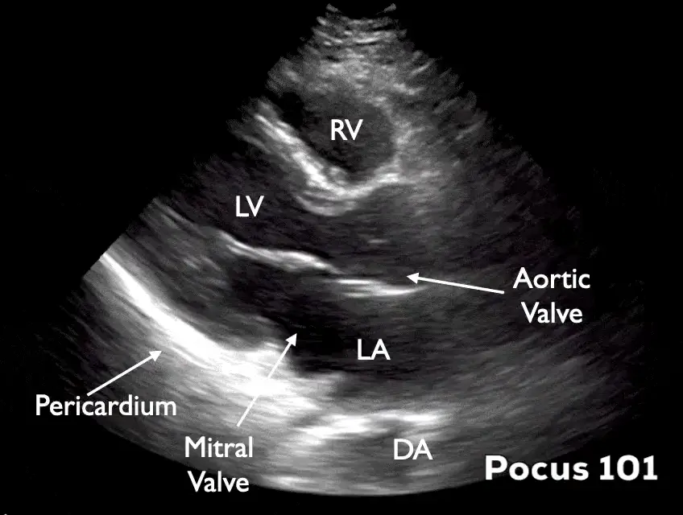

POCUS Tips › Cardiac
Parasternal Long AxisPLAX
The default first look at the heart: global LV function, the mitral and aortic valves, and the pericardium in one plane.
Open the interactive view with the loop and quiz →
Where to put the probe
- Window
- Left parasternal, 3rd–4th interspace, right against the sternum
- Marker
- Patient’s RIGHT shoulder (~10 o’clock)
- probe
- phased array
- preset
- cardiac
- depth
- 16 cm
Get the view
- Supine, or left lateral decubitus — decubitus drops the heart against the chest wall and rescues most bad windows.
- Probe flat on the chest just left of the sternum, 3rd–4th interspace, marker to the right shoulder.
- Slide one space up or down until LV, mitral valve and aortic valve all line up in the same plane.
- Rock until the apex points off the left of the screen and the descending aorta sits at the bottom — that is on-axis.
What you are looking at
- Right ventricle
- Nearest the probe, anterior. Should be roughly a third of the LV here.
- Left ventricle
- Judge wall thickening and inward motion, not just size.
- Mitral valve
- Anterior and posterior leaflets; the anterior leaflet almost slaps the septum in a vigorous heart.
- Aortic valve / LVOT
- Opens as a thin line in systole; a thick immobile valve suggests stenosis.
- Left atrium
- Should be about the same width as the aortic root.
- Descending thoracic aorta
- Your fluid landmark — pericardial fluid passes in front of it, pleural fluid behind.
- Pericardium
- The bright line hugging the posterior wall.
Numbers that matter
| Measure | Normal | Call it abnormal when |
|---|---|---|
| EPSSgap between anterior mitral leaflet tip and septum | < 7 mm | > 7 mm ≈ EF under 50%; ≥ 13 mm ≈ EF under 30%. Unreliable with mitral stenosis, significant aortic regurgitation, a mitral prosthesis, or asymmetric septal hypertrophy — pick a different window in those patients. |
| Aortic rootmeasured at the sinuses, end-diastole | ≤ 3.7 cm | > 4.0 cm — dedicated imaging, consider dissection in the right story |
| Left atrium (AP)end-systole, at the aortic valve level | ≤ 4.0 cm | > 4.0 cm suggests chronically raised filling pressures |
| RV free walldiastole, anterior wall | ≤ 5 mm | > 5 mm suggests a chronic component to any pressure load — acute-on-chronic disease still happens, so this alone does not exclude a fresh PE |
| RVOT : Ao : LAeyeball the three widths | ≈ 1 : 1 : 1 | any chamber clearly out of proportion |
Don’t be fooled — pitfalls
- Pericardial vs pleural fluidFollow the descending aorta. Fluid that tracks anterior to it is inside the pericardium; fluid that collects posterior/deep to it is pleural.
- Epicardial fat pad masquerading as effusionFat is echogenic rather than black, sits anteriorly only, and moves with the heart rather than staying still around it.
- Foreshortening from too high an interspaceCutting obliquely shortens the LV and makes a failing heart look small and hyperdynamic. If the apex is not in plane, you are off-axis.
- Eyeball EF in a hyperdynamic septic heartVasodilation makes a mildly impaired ventricle look normal. Pair the visual estimate with EPSS and a second view.
Bad image? Fix it
- Ribs in the waySlide up or down one interspace, or rotate a few degrees so the footprint sits between ribs rather than across one.
- Lung slides in over the heartAsk for a full exhale and hold. Common in COPD and ventilated patients; moving medially and caudally also helps.
- Grainy, black chambersRaise gain until blood is dark gray rather than pure black, then drop depth once the descending aorta is in view. Cardiac preset, never abdominal.
- No window at allLeft lateral decubitus with the left arm above the head. This single move fixes more parasternal windows than any knob.
So what — what the finding changes
- Dilated, sluggish LV + hypotensionCardiogenic pattern. Hold the fluids, consider an inotrope, escalate to formal echo.
- Effusion with a small collapsing right heartSuspect tamponade physiology. Confirm subcostal and apical, then call for drainage.
- Dilated aortic root or a mobile flapStop scanning and get CT angiography and cardiothoracic input.
Educational use only. Not for diagnosis or treatment decisions — confirm findings with formal imaging and your own judgment. By Yonathan Daniel, MD · About · Last reviewed 2026-09-15.